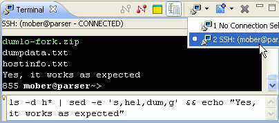

The emphasis on the TM 3.0 release has been API polish, cleanup and performance improvements, so there are not too many new features to mention. Still, here are some of the more noteworthy things you'll find in TM 3.0 (June 25, 2008) which is now available for download. See the TM 3.0 release notes as well as the build notes for details about API changes, bugs fixed and other changes.
Remote System Explorer (RSE) |
|
| Import / Export of Connections | Connections data, along with the filters stored in the connection-private filter pool, can now be exported to a file for sharing with others. The file is in zip file format but may be given any name by the user. When imported, the connection and its connection-private filter pool are added to the default profile. If there is a conflicting name for the connection, a new name is generated for it. There is no API for this function in this release. For more details, see bugs [189274] and [216858]. |
| Support for File Permissions and Ownership | Unix-style file permissions and ownership can now be viewed in the property sheet and in the Remote Systems Details view. In the new Permissions property page for remote files, these permissions can be modified on supported systems. For details, see bugs [180507] and [209593]. |
RSE: Connections and Subsystems |
|
| Windows CE Subsystem | The Eclipse Target Management project now supports Windows CE which means that you will be able to remotely edit, update and delete files directly on your Windows CE device. This feature will save you a lot of time if you are developing Windows CE applications and especially eRCP applications. You can also take advantage of TM being an EFS provider and use your WinCE's file system in your Eclipse workspace. |
| RSE Terminal Integration | For SSH connections, a "Terminals" subsystem is now available in RSE, which gives access to the TM Terminal Widget in a controlled fashion as part of RSE. This means, that RSE stores connection, password and encoding information, the Terminal lifecycle is controlled by RSE, the current directory can be picked up when launching a Terminal out of RSE, and the RSE Shell Processes Subsystem can operate over a Terminals subsystem - giving users who need remote access beyond the Shell view's line-based interface a Terminal based interface [226764]. |
Terminal |
|
| TM 3.0 Terminal | Several small fixes and enhancements
were made to the TM Terminal widget in TM 3.0:
|
| TM 3.0.1 Terminal | More small fixes and enhancements
were made to the TM Terminal widget in TM 3.0.1:
 |
More details about API changes, new features and bugs fixed are in the build notes of the earlier TM 3.0 milestone builds: